Reproducible file accompanying the manuscript
Basc: Constrained Approximation by Semidefinite Programming by Simon Foucart and Vladlena Powers
Contents
This document illustrates how to use the MATLAB package Basc (Best Approximation by Splines under Constraints, version 1.0) by calling the generic command with different options. All the theorerical justifications are to be found in [1]. The package relies heavily on CVX [2] and Chebfun [3], which are included in the downloadable folder. CVX and Chebfun need to be activated by typing basc_setup at MATLAB's prompt from the folder basc_v1.0. Then, for later convenience, we define
x = chebfun('x'); LW = 'LineWidth'; lw = 2; POS = 'Position'; pos = [-50 -50 1366 768]; FS = 'FontSize'; fs = 16; LOC = 'Location'; loc = 'northoutside'; BX = 'box'; bx = 'off';
Given a target function 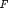 and a linear space of approximants, the general problem considered here consists in minimizing 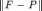 over all 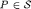 for various norms on the interval 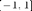 under various convex constraints. In all instances, the problem is translated to the level of Chebyshev coefficients using Chebfun [3], transformed into a semidefinite program, and solved using CVX [2]. Below are some usage examples of the main function.
One-sided polynomial approximation
Here we approximate the function 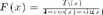 by polynomials of degree 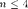 in the max-norm and in the 2-norm, and we also incorporate the constraints that the approximant is smaller/larger than the target function, i.e., we consider approximation from below/above. The leftmost graph shows the target function and the unconstrained approximants. The middle graph displays the differences between the target function and the max-norm approximants: one recognizes the equioscillation property for the unconstrained approximation and one also observes that the one-sided approximants are just shifted versions of the unconstrained approximant (a fact that is easy to establish). The rightmost graph reveals that such a phenomenon does not occur for the 2-norm.
n = 4; F = chebpoly(5)./(4+cos(x)+sin(x)); [e,P] = basc(F,n); [e2,P2] = basc(F,n,'norm',2); [ea,Pa] = basc(F,n,'above'); [ea2,Pa2] = basc(F,n,'above','norm',2); [eb,Pb] = basc(F,n,'below'); [eb2,Pb2] = basc(F,n,'below','norm',2); set(figure(1),POS,pos); subplot(1,3,1); plot(F,'x-k',P,'s--g',P2,'o:m',LW,lw); set(legend('target function','best max-norm approx.','best 2-norm approx.'),FS,fs,LOC,loc,BX,bx); subplot(1,3,2); plot(F-P,'s--g',F-Pa,'x-y',F-Pb,'d-.b',LW,lw); set(legend('max-norm approx. error','from above','from below'),FS,fs,LOC,loc,BX,bx); subplot(1,3,3); plot(F-P2,'o:m',F-Pa2,'x-c',F-Pb2,'d-.r',LW,lw); set(legend('2-norm approx. error','from above','from below'),FS,fs,LOC,loc,BX,bx);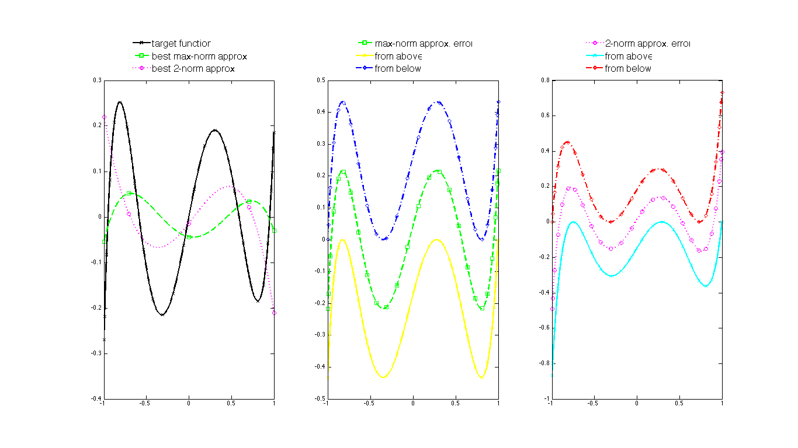
Weighted and interpolatory polynomial approximation
With a different target function and approximant degree, the experiment below shows how to compute the best unconstrained approximant and the best odd approximant relative to a weighted max-norm. It also shows how to compute the best approximant under interpolatory conditions at the endpoints, still relative to the weighted max-norm. Note that the weight 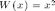 vanishes two-fold at , which forces the approximant to agree two-fold with the target function at . This is indeed verified by the examples considered here.
n = 5; F = chebpoly(7)./(4+cos(x)+sin(x)); [ew,Pw] = basc(F,n,'weight',x.^2); [ewo,Pwo] = basc(F,n,'weight',x.^2,'parity','odd'); [ewi,Pwi] = basc(F,n,'weight',x.^2,'interpolation',{{0,[-1 1]}}); set(figure(2),POS,pos); subplot(1,2,1); plot(F,'x-k',Pw,'d-.b',Pwo,'s--g',LW,lw); set(legend('target function', 'best weighted approx.', 'best weighted odd approx.'),FS,fs,LOC,loc,BX,bx); subplot(1,2,2); plot(F,'x-k',Pwi,'o:r',LW,lw); set(legend('target function', 'best weighted interpolatory approx.'),FS,fs,LOC,loc,BX,bx);
Warning: the optimization status is Inaccurate/Solved Warning: the optimization status is Inaccurate/Solved

Spline approximation
We now consider the approximation in the max-norm by splines, i.e., piecewise polynomials satisfying some smoothness conditions at the breakpoints. In the first example below, a polynomial of degree 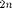 is approximated by splines of degree with one breakpoint at . No smoothness condition is imposed at this breakpoint, in other words, the spline is a priori 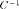 there, but one notices that it is in fact automatically 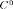 (a fact that can be verified theoretically). For comparison, the best spline approximant is also displayed.
n = 2; F = chebfun(rand(2*n+1,1),'coeffs'); [es,Ps] = basc(F,2*n-1,'bkpts',[0],'smoothness',[-1]); [es2,Ps2] = basc(F,2*n-1,'bkpts',[0],'smoothness',[1]); set(figure(3),POS,pos); plot(F,'x-k',Ps,'d-.b',Ps2,'s--g','interval',[-0.4 0.4],LW,lw); set(legend('target function','C^{-1}-spline approx.','C^1-spline approx.'),FS,fs,LOC,loc,BX,bx);

In the next example of spline approximation, the target function is a spline itself: it is taken to be the prototypical absolute value function. We compute its best max-norm approximants by splines with breakpoints at and 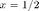 and whose three polynomial pieces have degree , , and , respectively. One approximant has smoothness at both breakpoints -- this example incidentally reveals that best approximants are not always unique, as perturbing the slopes of the outside pieces does not affect the overall error. Another approximant has maximal (meaning here) smoothness at both breakpoints. The last approximant obeys an extra constraint besides maximal smoothness, namely its derivative is lower bounded by the function 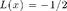.
F = abs(x); [e0,P0] = basc(F,[1 2 1],'bkpts',[-1/2 1/2],'smoothness',[0 0]); [e1,P1] = basc(F,[1 2 1],'bkpts',[-1/2 1/2],'smoothness','maximal'); [elr,Plr] = basc(F,[1 2 1],'bkpts',[-1/2 1/2],'smoothness','maximal',... 'lower range',{{1,chebfun(-0.5)}}); set(figure(4),POS,pos); plot(F,'x-k',P0,'d-.b',P1,'s--g',Plr,'o:r',LW,lw); set(legend('target function', 'C^0-approx.','C^1-approx.','lower-ranged C^1-approx'),FS,fs,LOC,loc,BX,bx);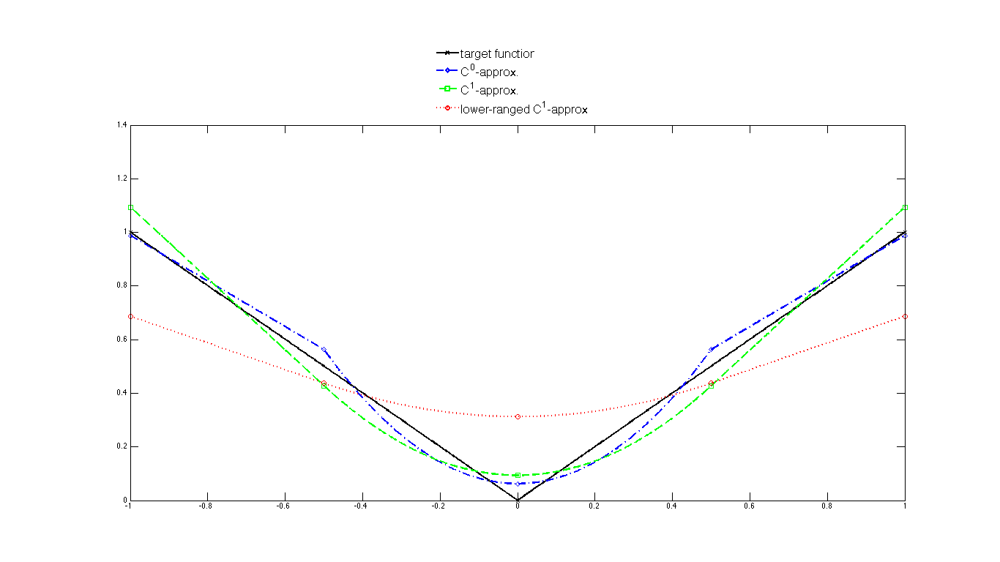
Bernstein-type constants
Here we look at the rate 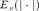 of approximation error to the absolute value function in the max-norm by polynomials of degree . It is a classical fact that  exists. This result is due to Bernstein, who conjectured the value
exists. This result is due to Bernstein, who conjectured the value  for . This was disproved by Varga and Carpenter who obtained the value 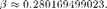 Furthermore, it is known that exists, too. Below, we verify the behavior of and investigate that of 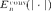. Before doing so, let us see what the best approximant, the best convex approximant, and the best convex-on-$[-2/3,2/3]$ approximant to look like when 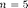.
for . This was disproved by Varga and Carpenter who obtained the value 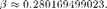 Furthermore, it is known that exists, too. Below, we verify the behavior of and investigate that of 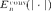. Before doing so, let us see what the best approximant, the best convex approximant, and the best convex-on-$[-2/3,2/3]$ approximant to look like when 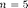.
n = 5; F = abs(x); [e,P] = basc(F,n); [econv,Pconv] = basc(F,n,'convex'); [econv2,Pconv2] = basc(F,n,'shape',{{2,-(x.^2-4/9)}}); set(figure(5),POS,pos); plot(F,'x-k',P,'d-.b',Pconv,'o:r',Pconv2,'s--g',LW,lw); set(legend('target function','best approx.','best convex approx.',... 'best partially convex approx.'),FS,fs,LOC,loc,BX,bx);
Warning: the optimization status is Inaccurate/Solved Warning: the optimization status is Inaccurate/Solved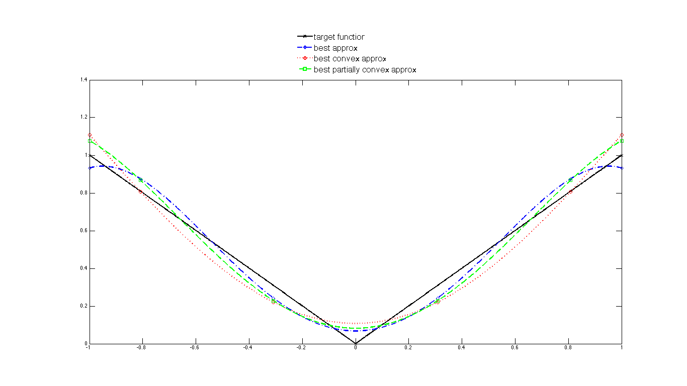
We continue with the calculation of and of for values of even 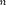 up to 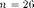 and 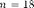, respectively, and we report their behaviors in the graph below. Note that we used a customized code for the convex approximation in order to increase the range of computable .
beta = 0.280169499023; for n = 2:2:26; B(n) = n*basc(F,n); end for n = 2:2:18; Bcvx(n) = Bernstein_conv(n); end set(figure(6),POS,pos); subplot(1,2,1); plot(2:2:26,B(2:2:26),'d-.b',2:2:26,beta*ones(1,13),'o:r',LW,lw); set(legend('n E_n(|.|)','\beta'),FS,fs,LOC,loc,BX,bx); xlabel('n'); subplot(1,2,2); plot(2:2:18,Bcvx(2:2:18),'s--g',LW,lw); set(legend('n E_n^{conv}(|.|)'),FS,fs,LOC,loc,BX,bx); xlabel('n');
Warning: the optimization status is Inaccurate/Solved Warning: the optimization status is Inaccurate/Solved Warning: the optimization status is Inaccurate/Solved Warning: the optimization status is Inaccurate/Solved

Natural cubic spline
Given nodes and data , the natural cubic spline is the 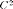 function that minimizes subject to the interpolatoty conditions 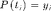 for all . This function has breakpoints at , its pieces all have degree , and it satisfies 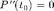 and 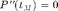. We minimize not over all functions, but over all splines of degree 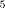 with breakpoints and we verify below that the second derivative of the minimizer is indeed a continuous linear function vanishing at the endpoints.
t = [-1/3 1/3]; s = [2 2]; n = 5; [e,P] = basc(chebfun(0),n,'objective',{inf,{2,1}},'norm',2,'bkpts',t,... 'smoothness',s,'interpolation',{{0,[-1 t 1;1 2 0 1]},{2,[-1 1;0 0]}}); set(figure(7),POS,pos); subplot(1,2,1); plot(P,'d-.b',LW,lw); hold on; plot([-1 t 1],[1 2 0 1],'xk',LW,2*lw); title('A natural cubic spline',FS,fs); subplot(1,2,2); plot(diff(P,2),'o:r',LW,lw); title('Second derivative of the natural cubic spline',FS,fs);

References
1. S. Foucart and V. Powers, "Basc: constrained approximation by semidefinite programming", In preparation.
2. CVX Research, Inc., "CVX: MATLAB software for disciplined convex programming, version 2.1", 2014, http://cvxr.com/cvx.
3. L. N. Trefethen et al., "Chebfun Version 5, The Chebfun Development Team", 2014, http://www.chebfun.org.